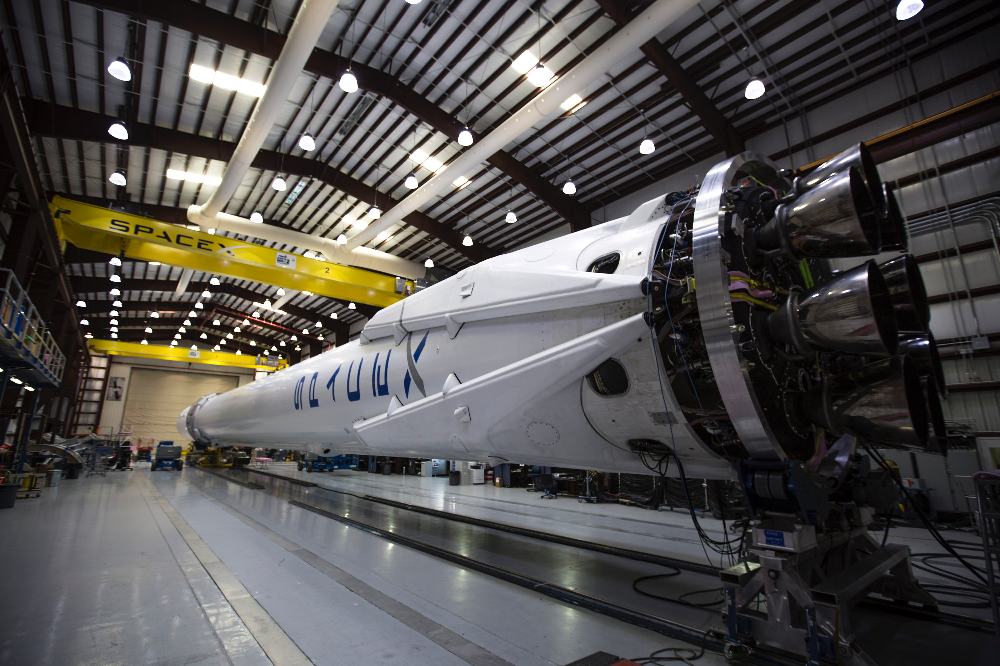

Basic Facts
- I am a proud Mexican.
- I am 15 years of age.
- I am Christian-Apostolic.
- I speak two languages fluently: Spanish and English, and I am currently learning French.
- My favorite color is blue.
- The element of nature that intrigues me the most is the ocean.
SMASH Experience
I first heard about SMASH through a classmate in high school and my school's MESA club. I never knew when the application process begun but I did know that the application was due two weeks after I first open the application. I thought I wouldn't be accepted because my application was not the best in my opinion but it all turned out amazingly. Through SMASH I met new friends and scholars who I can connect with, SMASH has become part of my family. I love learning about math, science, engineering, and technology. SMASH UC Davis has been a fascinating part of my life so far.
Future Career
Before starting SMASH I had an idea of who I wanted to become but I was not 100% sure about it. When watching STEM related movies like Hidden Figures, The Martian, etc. I am always attracted to the science behind them and imagine myself accomplishing something huge in this field and even working for NASA or SpaceX. In addition, something about airplanes and how such heavy creations can travel through the sky fascinates me. It seemed like aerospace engineering was my fit.
